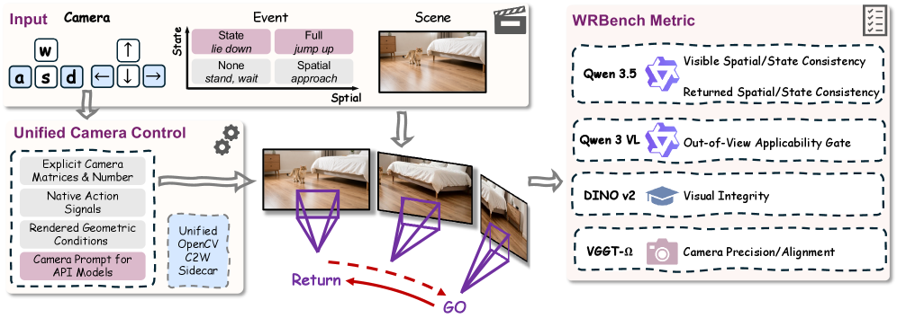

Jinpeng Lu, Dexu Zhu, Haoyuan Shi, Linghan Cai, Guo Tang, Yinda Chen, Jie Cao, Duyu Tang, Yi Zhang, Yong Dai, Xiaozhu Ju
University of Science and Technology of China, Beijing Innovation Center of Humanoid Robotics, Institute of Automation Chinese Academy of Sciences, Dresden University of Technology, Peking University 等
视频生成和交互式场景生成近一年被频繁包装成 world model，但多数 benchmark 主要检验画面质量、运动自然性、摄像机控制或局部几何一致性。真正的世界建模还要求内部状态在不可观测时继续演化，即物体和事件要在离开视野后仍按物理或任务逻辑推进，而不是镜头回来时从“离开前那一刻”继续接。
核心问题
现有主流 world model / video generation system，是否真的维护了一个与观测解耦、在不可见期间仍持续演化的内部世界状态？如果没有，应当如何系统化测出这个缺陷？
对当前主题的关键意义在于：如果你关心具身智能、长期交互、多传感器观测或实验视频理解，这篇非常值得读。它给出的批评框架也能迁移到科学场景建模：真正重要的是不可见期间的状态是否被持续维护。
方法与关键创新

Figure 2: WRBench method overview. Natural-25 event-view records supply the scene, event, and viewpoint intervention; WRBenchLib translates each record into a generated video and p...
Figure 1: Overview of QK Product Steering . For each selected query head and its assigned shared key head, we form the QK product M h = W q , h ⊤ W k , g M_{h}=W_{q,h}^{\top}W_{k...
Figure E.4: Reliability diagrams for all methods on CIFAR-10H. (a) All test images, an expanded view of Figure 1 with per-bin error bars. (b) Hard subset (low-agreement images) onl...
Figure 5: Failure categories for Ledger trajectories across domains and backbone models. Missed required actions dominate, with domain-specific wrong-argument and unauthorized-acti...
![Figure 1: Overview of QK Product Steering . For each selected query head and its assigned shared key head, we form the QK product M h = W q , h ⊤ W k , g M_{h}=W_{q,h}^{\top}W_{k,g} , suppress its dominant singular modes, and recover an edited query weight through a closed-form query-only projection. The shared key weight is kept unchanged, making the edit compatible with grouped-query attention. The same framework also enables symmetric and antisymmetric QK decompositions to identify whether hallucination-relevant priors arise from mutual or directional attention channels.](../assets/figures/368e5e9f772e4830.png)